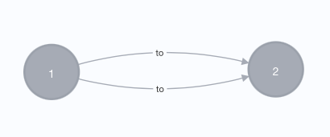

Py2neo Extensions
The rel2graph library relies on py2neo for the connection to a neo4j graph. As py2neo is limited for specific use-cases, this library provides some helpful extensions.
Graph with parallel relations
Py2neo does not allow the creation of parallel relations: Two parallel relations of the same type between the same two nodes. If two parallel relations are created, they are automatically merged.
{kind=link}
Use the GraphWithParallelRelations class to initiate your graph before passing it to the rel2graph Converter to allow for such parallel relations. The GraphWithParallelRelations behaves like a normal py2neo graph but supports the creation of parallel relations.
If you want to merge relations with a GraphWithParallelRelations you can specify a primary attribute for a relation.
from rel2graph.py2neo_extensions import GraphWithParallelRelations
from rel2graph import Converter ...
graph = GraphWithParallelRelations(scheme="http", host="localhost", port=7474, auth=('neo4j', 'password'))
iterator = ...
converter = Converter(config_filename, iterator, graph)
converter()
Note that only graph.create and graph.merge are tested.
No other functionality is guaranteed. It is suggested to use the normal py2neo.Graph class for interaction with a graph other
than a conversion with rel2graph. Querying a neo4j graph with parallel relations should be no problem with the normal py2neo.Graph class.